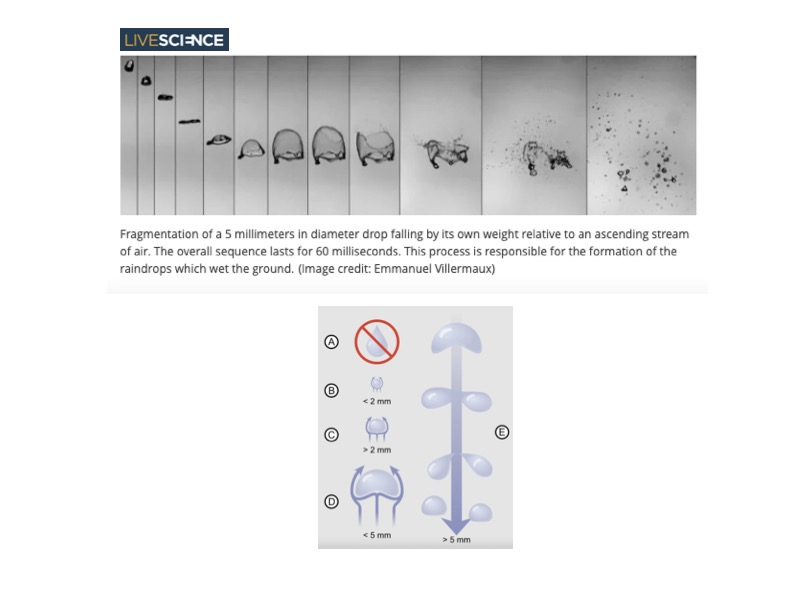
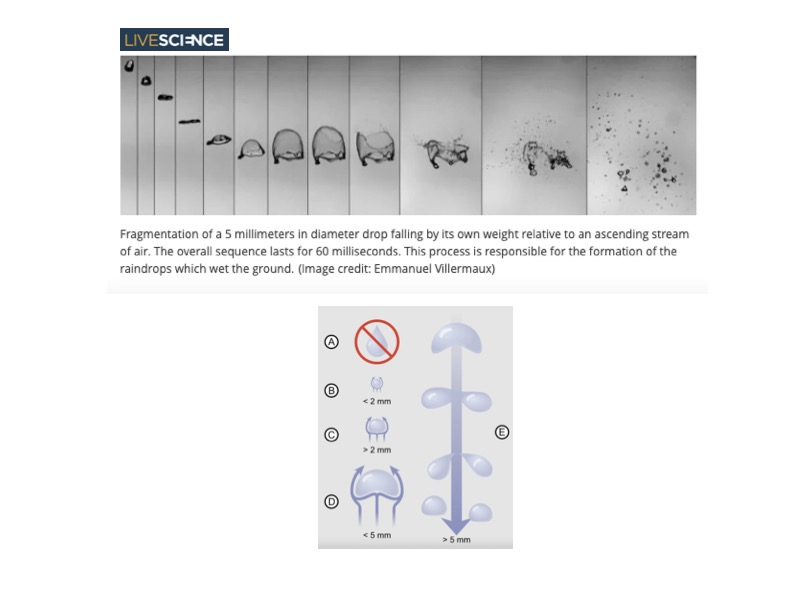
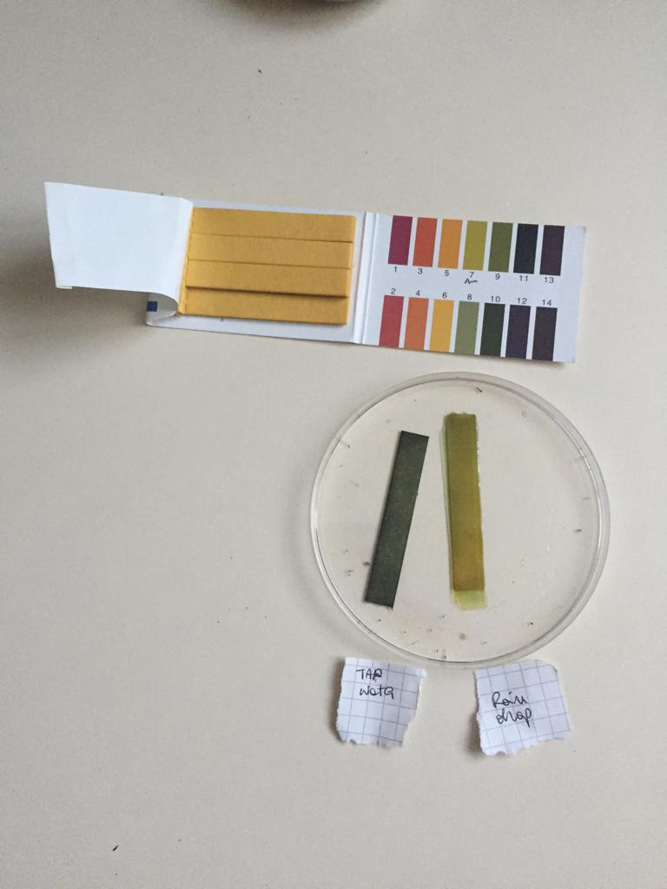
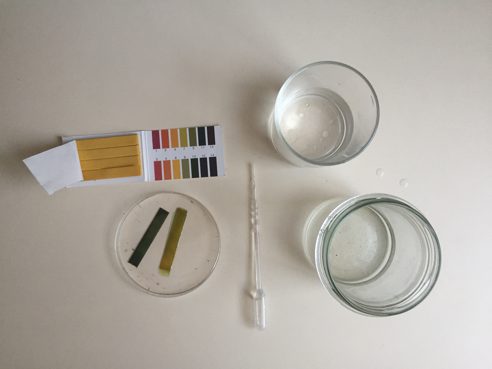

Collecting raindrops. I spent most of my childhood in the South of Italy where sunny days are the norm. I used to dislike rain and only made peace with it
after years of living in Germany. This project is a personal tribute to and celebration of this water-based phenomena.
This tiny jar contains raindrops fallen above the Donaulände (Linz) on the afternoon of Sunday, April 24th, 2022.


 

References:
// Definition of a rain drop: "A drop of water of diameter greater than 0.5 mm falling through the atmosphere; a typical raindrop might have a diameter of 1 - 2 mm - Glossary of Meteorology. (American Meteorological Society), accessed May 3rd, 2022.
// The Riddle of Experience vs. Memory | Daniel Kahneman (2010) - TED Talk, accessed May 3rd, 2022.
update 17.06.2022
I came back revisiting this project. The images below are microscopic
views of the raindrops collected in April. The patterns should be deposits of dust particles.
I was unable to spot microorganisms inside (I kept the raindrops in the fridge).
Somewhere inside of every raindrop is a tiny impurty. In my understanding, these particles are relevant to the raindrop's existence because water vapor can't condense into droplets on its own.
The entire process is described in the book by Prupacher and Klett: Microphysics of Clouds and Precipitation.


update 29.06.2022
The images below are litmus paper tests (a quick method of determining whether a liquid solution is acidic
or basic/alkaline). Their pH scale ranges from 0 to 14. The readings are based around a pH of 7, which is neutral (like pure water). This scale might seem small, but each level
is 10 times bigger than the next; a pH of 9 is 10 times more alkaline than a pH of 8. A pH of 2 is 10 times more acidic than a pH of 3, and 100 times more acidic than a reading of 4. I tested
a sample of tap water (blueish stripe on the left) and a raindrop (yellowish, light-green stripe on the right).


The rainwater's ph reached 7 (neutral solution have a pH of 7); tap water reached a value between 8 and 10 (it is more alkalinic than the rainwater sample).
Life on earth depends on appropriate pH levels in and around living organisms and cells. The human body, our bag of bones, muscles, sinews, organs, and the countless other doo-dads that make up this system
works constantly to control pH levels of blood and other fluids.